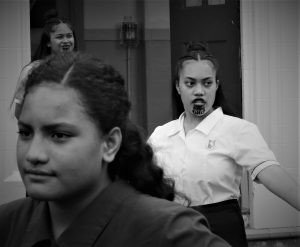
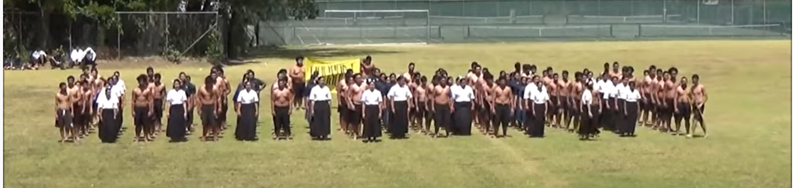
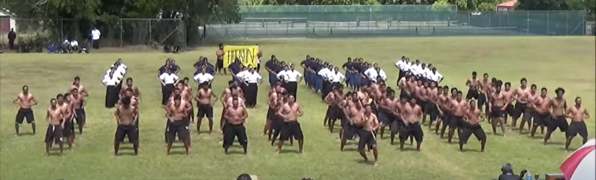
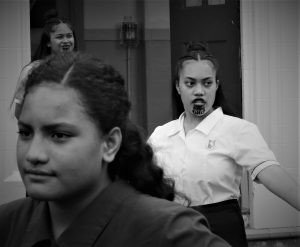
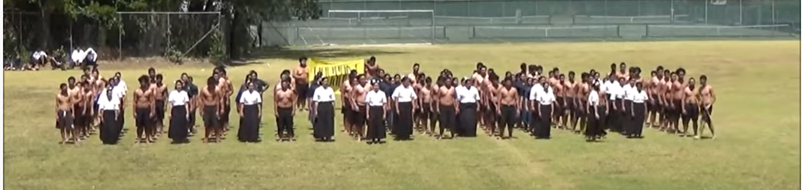
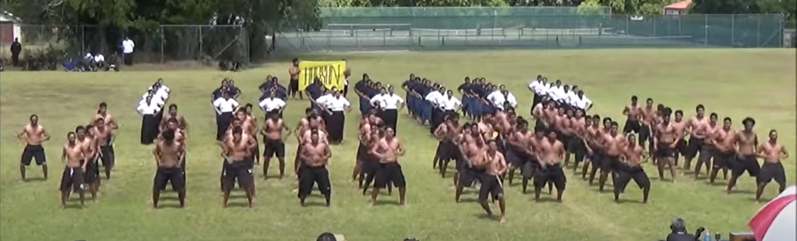

Traditions of Waiata
Māori have an extensive tradition of song and dance which encompasses a broad range of styles. The range of waiata is evident in the many names that demonstrate both form and function, for example waiata aroha (songs of love) or waiata whakautu (songs of reply). Types of waiata are also distinguished by the music and performance.
The emotionally charged circumstances under which waiata were composed are reflected in their highly poetic language, which is rich with allusion, metaphor and imagery. Oriori (lullabies) were written for the birth of an important child and waiata tangi (songs of mourning) upon the death of a rangatira.
Function of waiata
Waiata serve many important functions and are used in a variety of contexts in Māori culture and society. A waiata may be used to support a whaikōrero (a formal speech) on the marae or sung as an expression of grief at the loss of a loved one. Waiata were used to assist with the education of children, to urge the people to take up a cause and to mourn in times of calamity and misfortune. Additionally, waiata document history, recalling the past through mentions of ancestors, events and places. Traditional waiata memorialise particular conflicts from the perspective of the composer and his or her people. Waiata are also called upon to settle historical debates or to illustrate or add weight to a contemporary or historical point.